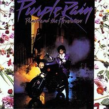

My Top 10 Albums
"Music can change the world" - Ludwig Van Beethoven
About Me
Ever since I can remember music has always been a big part of my life. My parents love and passion for music was something that they passed on to me and it has always remained a passion of mine. Music is something that I continue to make a conscious effort to surround myself with on a daily basis. These 10 albums have helped shape the person I am today all the while ultimately serving as the soundtrack to my life and so I wanted to share them with you....Happy Listening!

Abbey Road - The Beatles (1969)

A Live One - Phish (1994)
Exodus - Bob Marley (1977)

Head Hunters - Herbie Hancock (1973)
OK Computer - Radiohead (1997)

Purple Rain - Prince (1984)

Born On The Wrong Planet - The String Cheese Incident (1997)

Speaking In Tongues - Talking Heads (1983)

Waiting For Columbus - Little Feat (1978)

Welcome To The Cruel World - Ben Harper (1994)
"One good thing about music, when it hits you, you feel no pain." - Bob Marley
Contact Me